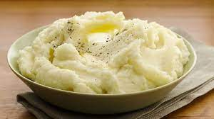

Mashed Potatoes

Description
Original mashed potatoes with a gold looking texture that reminds you of granny's house!
Ingredients
- 3 Yukon Gold potatoes, peeled and chopped
- 1/3 cup of milk
- 1/3 cup of sour milk
- Salt and ground black pepper to taste
Steps
- Place potatoes into a large pot and cover with salted water; bring to a boil.
Reduce heat to medium-low and simmer until tender, about 20 minutes.
- Drain
- Mash potatoes with milk, sour cream, salt, and pepper in the large pot.
Back to Home Page